1. Introduction¶
This course is about uncertainty quantification (UQ) in numerical simulation.
Model and uncertainties¶
The two actors in the play are the models and the uncertainties.
Models¶
What is a model?
In this course, a model is a function \(f\):
- representing a causal phenomenon,
- with input variables \(x\in\mathcal{X}\),
- with output variables \(y:=f\left(x\right)\in\mathcal{Y}\).
These input and output variables can be
-
either monodimensional, e.g.
- the temperature at given location and time,
-
or multidimensional, e.g.
- the temperature at various points along a line,
- the temperature at various nodes of a spatial mesh,
- the temperature at a given location every minute.
Among the output variables, some may interest us more than others; we call them variables of interest.
Examples of models
-
An analytical expression, e.g.
- \(f(x)=\pi x^2\) to compute the area enclosed by a circle of radius \(x\),
-
a numerical simulator, e.g.
- a computational fluid dynamics (CFD) model for the airflow over an aircraft wing,
-
...
Models have many advantages, such as
- explainability, because a model is based on physical theories.
- accuracy with respect to the modelled phenomenon.
Applications
Models can be used to
- compare several designs (trade-off study),
- improve a design, or even look for a totally disruptive one,
- ensure that a design meets certain requirements (reliability),
- analyse and (hope to) understand complex phenomena,
- etc.
More generally, models can be used instead of experiments (in silico vs. in situ). This is computer experimentation.
Uncertainties¶
What is uncertainty? What are uncertainties?
- "A situation in which something is not known, or something that is not known or certain." - Cambridge dictionary
- "The feeling of not being sure what will happen in the future." - Cambridge dictionary
- "The state of being uncertain." - Oxford Learner's Dictionaries
- "Something that you cannot be sure about; a situation that makes you not be or feel certain" - Oxford Learner's Dictionaries
Where do uncertainties come from?¶
A model faces uncertainties on all sides.
In the equations¶
- Simplification of the physical phenomenon.
- Different theories and assumptions.
In the numerical resolution¶
- Numerical approximation of partial differential equations.
- Different methods, mesh sizes, ...
- Numerical noise in addition.
In the model inputs¶
- Uncertain data (initial and boundary conditions, calibration data, ...).
- Uncertain parameters (dimensions, physical properties, ...).
Subject to these uncertainties, the model generates an output that is in turn uncertain.
Example
Let us consider a model \(f\) calculating the temperature difference between today and the day after tomorrow). Its input variable \(x_1\) defining the temperature now can be considered as correct as measured with a thermometer, but the input variable \(x_2\) defining the temperature at the same time the day after tomorrow is uncertain, because it comes from a weather forecast. Then, the output \(y:=f(x_1,x_2)\) is uncertain.
Types of uncertainties¶
Because these uncertainties have different types, we may want to classify them in order to propose specific analyses.
Epistemic vs. aleatory¶
We often consider two types of uncertainties: aleatory and epistemic.
What is an aleatory uncertainty?
- An aleatory uncertainty is intrinsic to the parameter to which it relates.
- An aleatory uncertainty is irreducible.
- An aleatory uncertainty can be estimated by means of experimental measures.
- Its modelling is mainly based on probability theory and inferential statistics.
What is an epistemic uncertainty?
- An epistemic uncertainty is due to a lack of knowledge.
- An epistemic uncertainty could be reducible.
- Knowledge is often subjective and based on expert opinion, either quantitative or qualitative.
- Their modelling can rely on different uncertainty theories (possibility, credibility, probability, ...) but mainly based on probability theory for simplicity.
Probability theory & epistemic variables?¶
Cycling race
- \(N\) cyclists.
- Who is going to win the race?
- A first person says "They have the same level!".
- A second person says "No idea!".
For each statement, what is the probability that the \(i^{\text{th}}\) cyclist wins?
\(\frac{1}{N}\) in both cases! For the first one, it's obvious and for the second one, we use the principle of insufficient reason, a.k.a. principle of indifference. As we can see, natural language sentences are very different but identical in probabilistic language.
Color balls in the box
- A box contains at least as many blue balls as red balls.
- This box contains at most twice as many blue balls as red balls.
What is the probability that the box contains at most 50% more blue balls than red balls?
- This probability can be written as \(\mathbb{P}[n_b\leq \frac{3}{2}n_r]\).
- Points 1 and 2 can be translated as \(n_b\geq n_r\) and \(n_b\leq 2n_r\) respectively.
-
The principle of insufficient reason applied to \(n_b\):
- \(n_b\) is a uniform variable between \(n_r\) and \(2n_r\).
- So, \(\mathbb{P}[n_b\leq \frac{3}{2}n_r]=\frac{\frac{3}{2}-1}{2-1}=\frac{1}{2}\).
-
The principle of insufficient reason applied to \(n_r\):
- \(n_r\) is a uniform variable between \(\frac{1}{2}n_b\) and \(n_b\)
- So, \(\mathbb{P}[n_b\leq \frac{3}{2}n_r]=\mathbb{P}[n_r\geq \frac{2}{3}n_b]=\frac{1-\frac{2}{3}}{1-\frac{1}{2}}=\frac{2}{3}\).
The probability is equal to both \(\frac{1}{2}\) and \(\frac{2}{3}\), which makes no sense.
Probability theory isn't necessarily a good approach for epistemic variables, as you can see.
Uncertainty modelling¶
Frequentist probability theory is mainly used to model aleatory uncertainties.
We can use Bayesian probability theory, evidence theory, etc. to model epistemic uncertainties.
In the case of evidence theory,
- experts can provide plausible and believable values for the epistemic parameters and these expert opinions can be aggregated.
- Then, a first uncertainty study based on the aleatory uncertainties can be realized with the epistemic uncertainties fixed at their believable values and a second one with the epistemic uncertainties fixed at their plausible values.
- Lastly, both believable, plausible and pignistic uncertainty study results are obtained rather than a single one in the case where all uncertainties would be treated as aleatory variables.
- In practice, an uncertainty study result could be the estimated probability density function of the model output.
In practice,
- epistemic uncertainties are often treated with the frequentist probability theory, unless it doesn't make sense at all, as with the problems of cyclists and balls,
- the distinction between epistemic and random uncertainties is not always easy to make or engraved in stone...
Why study the effect of uncertainties?¶
The uncertain world¶
Let's consider a model \(f\):
- depending on input variables \(x=(x_1,\ldots,x_d)\),
- returning an output variable \(y=f(x)\).
In the deterministic world, \(y\) is a variable of interest.
In a uncertain world, when the value of \(x\) is uncertain, we can
- replace \(x\) by a random variable \(X\), e.g., \(X_1\) distributed as a Gaussian variable, \(X_2\) distributed as a uniform variable, ...
- quantify the impact of \(X_1,\ldots,X_d\) on the model output \(Y=f(X)\) which is in turn random.
\(Y\) is not referred to as a variable of interest, unlike \(y\).
Which impact on the model output?¶
We are then interested in the variability of \(Y\) caused by the variability of \(X\). Unfortunately, the probability distribution of \(Y\) is often unknown and potentially far from the classic probability distributions (normal, exponential, log-normal, uniform, ...).
In practice, we want to summarize the output uncertainty with a quantity of interest:
-
a central statistics of \(Y\), e.g.
- its mean,
- its median
- its standard deviation,
-
a reliability measure of \(Y\), e.g.
- the probability that it exceeds a critical threshold,
- the quantile associated to some critical level,
-
sometimes, the whole probability distribution of \(Y\)!
There is a question in particular:
How do the input uncertainties \(X\) impact the model output \(Y\)?
Does the output remain close to its nominal value?
- Is the variance of \(Y\) small or not?
- Is the variation coefficient of \(Y\) small or not?
- Is the probability that \(Y\) exceeds a threshold small or not?
- Is green or red?
If you have a lot of observations of \(Y\):
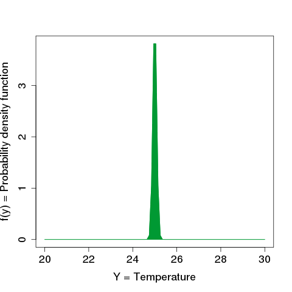
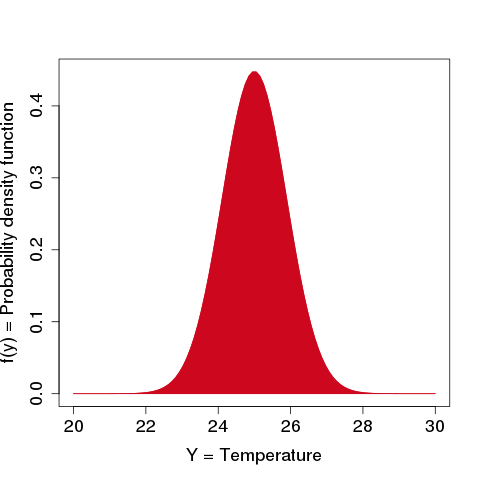
If you have a few observations of \(Y\):
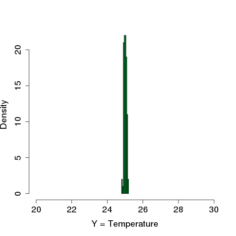
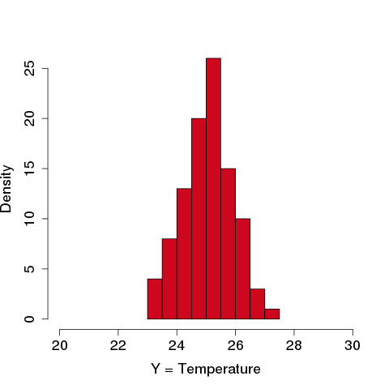
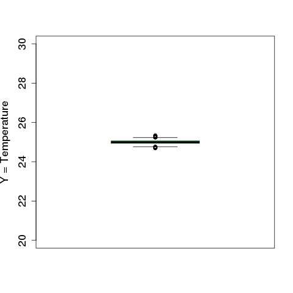
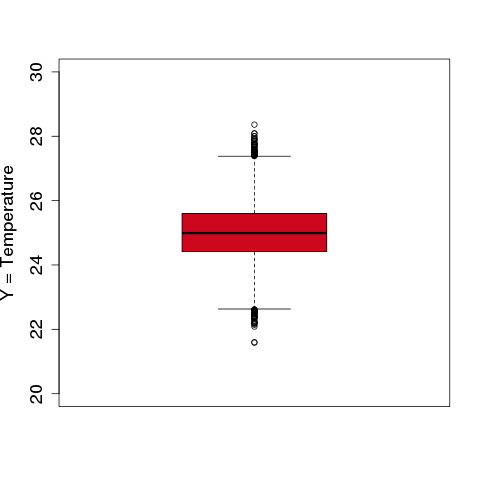
Is the risk that the output exceeds a critical threshold important?
- For any input \(x_i\) subject to a small variation \(\delta x_i\), the output variation \(\Delta y\) is small.
- There is an input \(x_i\) subject to a small variation \(\delta x_i\) for which the output variation \(\Delta y\) is important.
Which assertion is true? Is there a butterfly effect?
Is the risk that the output exceeds a critical threshold important?
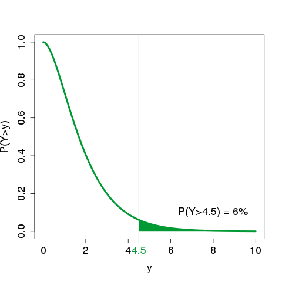
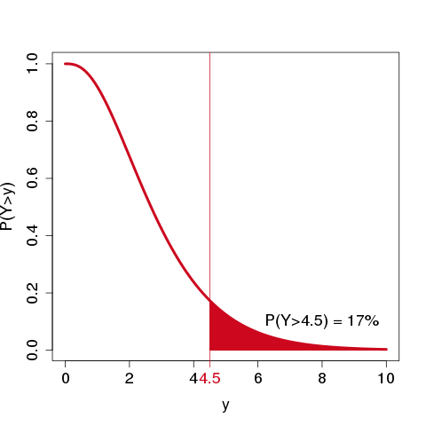
How is the output uncertainty explained by the inputs?
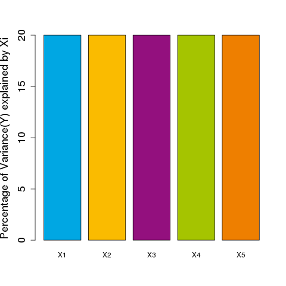
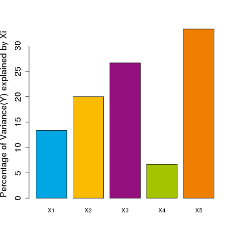
Which input uncertainties should we reduce?
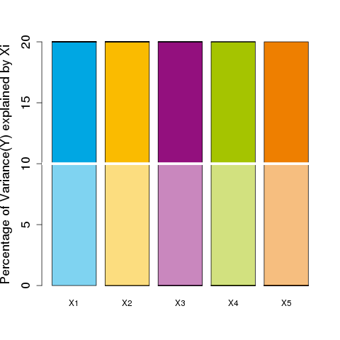
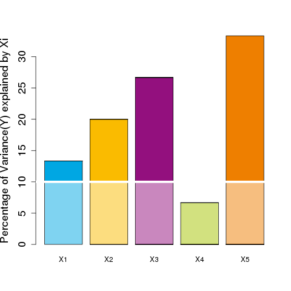
UQ&M as an industrial solution¶
The problem that emerges is the management of uncertainties in a model.
We want to
- quantify the uncertainty present in the output of a model,
- link this uncertainty to the uncertain input sources (if too much output uncertainty),
- identify the more significant uncertain input sources (if too much output uncertainty),,
- reduce some uncertainty sources if possible (if too much output uncertainty),.
A solution to this problem is called uncertainty quantification & management (UQ&M), often abbreviated to UQ. UQ is an engineering domain in its own right, requiring knowledge of the fields to which it applies.
Based on industrial practices, four categories can be listed1 to classify the objectives of any quantitative risk/uncertainty assessment:
U (Understand)
Understand the influence or rank of importance of uncertainties helps to guide the new measurements or the computer modeling and the R&D efforts.
A (Accredit)
Give credit to a model or a method of measurement and reach an acceptable quality level for its use, by fixing some model inputs, estimating parameters of other inputs, reducing the output uncertainty, ... or even updating the uncertainty model through dynamic data assimilation.
S (Select)
The consideration of uncertainties allows to compare different system performances and optimize the choice of the objective policy, operation or design of the system.
C (Comply))
Defining an adequate criterion or regulatory threshold (e.g. licensing, certification, ...) taking into account the uncertainties allows to demonstrate compliance of the system.
A popular scheme is available to summarize a UQ&M study from a number of generic tasks:
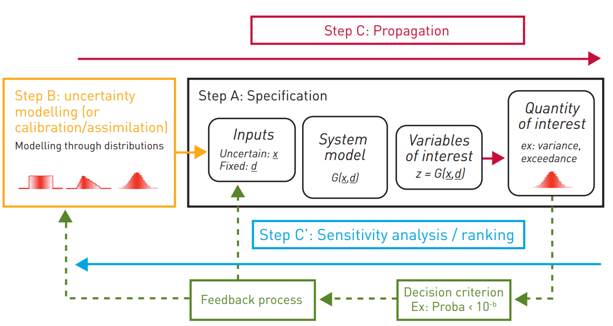
Surrogate models as UQ&M enablers¶
UQ&M techniques tools often require an important number of model evaluations to estimate quantities of interest such as quantiles or probabilities.
But in many cases, model evaluation are expensive or time-consuming and in these cases, precise estimation of these quantities is impossible.
To carry out UQ studies in spite of this,
models are commonly replaced by so-called surrogate models
which are inexpensive to evaluate.
These surrogate models are often designed using machine learning techniques.
-
E de Rocquigny. Quantifying uncertainty in an industrial approach: an emerging consensus in an old epistemological debate. SAPI EN. S. Surveys and Perspectives Integrating Environment and Society, 2009. ↩